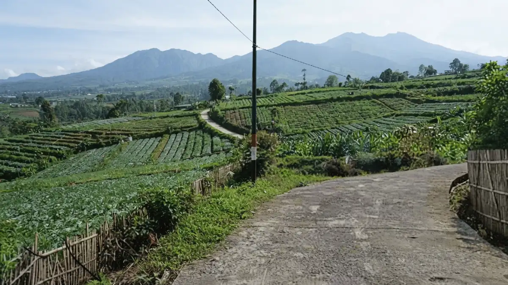
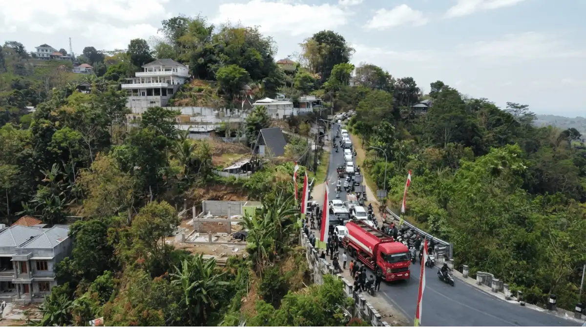

Ilustrasi Pemandangan jalur perjalanan menuju Pujon Kidul yang asri.Rute menuju Bukit Nirwana Pujon kini semakin mudah dijangkau bus rombongan karena jalan akses sudah diperlebar dan diaspal hot mix, dengan jarak sekitar 30 kilometer dari pusat Kota Malang.
- Berapa Jarak dan Waktu Tempuh Menuju Pujon Kidul dari Kota Malang?
- Rute Apa yang Paling Direkomendasikan untuk Bus Mini atau Elf Rombongan?
- Apakah Infrastruktur Jalan Sudah Aman untuk Kendaraan Rombongan Corporate?
- Apa Saja Tips Penting Sebelum Berangkat Rombongan ke Bukit Nirwana?
- Kapan Waktu Terbaik untuk Melakukan Perjalanan Rombongan ke Bukit Nirwana?
- Kesimpulan
- FAQ
Berapa Jarak dan Waktu Tempuh Menuju Pujon Kidul dari Kota Malang?
Jarak menuju Pujon Kidul dari Kota Malang sekitar 30 kilometer dengan waktu tempuh 1 sampai 1,5 jam perjalanan, sementara dari alun-alun Kota Batu jaraknya hanya sekitar 10 kilometer dengan waktu tempuh normal 20 sampai 25 menit.
| Titik Keberangkatan | Jarak | Waktu Tempuh |
|---|---|---|
| Pusat Kota Malang | 30 km | 1 - 1,5 jam |
| Alun-Alun Kota Batu | 10 km | 20 - 25 menit |
Perbedaan waktu tempuh ini penting diperhitungkan tim HRD saat menyusun jadwal keberangkatan, terutama jika titik kumpul karyawan berada di pusat Kota Malang dan bukan di Kota Batu.
Rute Apa yang Paling Direkomendasikan untuk Bus Mini atau Elf Rombongan?
Rute yang paling direkomendasikan untuk bus mini atau Elf rombongan adalah melalui Kota Batu, yaitu Jalan Panglima Sudirman, lalu Jalan Trunojoyo sejauh sekitar 5 kilometer, melewati Gapura Selamat Jalan Kota Wisata Batu, belok kiri di Simpang Patung Sapi Pujon, kemudian naik sekitar 2,5 kilometer menuju ujung jalan.
Berikut urutan rute yang bisa dijadikan acuan pengemudi.
- Mulai dari Jalan Panglima Sudirman, Kota Batu
- Lanjut ke Jalan Trunojoyo sejauh sekitar 5 km
- Melewati Gapura Selamat Jalan Kota Wisata Batu
- Belok kiri di Simpang Patung Sapi Pujon
- Naik sekitar 2,5 km sampai ujung jalan tiba di lokasi
Rute ini dipilih karena kondisi jalannya relatif lebih lebar dibanding jalur alternatif lain menuju Pujon, dengan Simpang Patung Sapi menjadi penanda utama agar pengemudi tidak salah belok.
Apakah Infrastruktur Jalan Sudah Aman untuk Kendaraan Rombongan Corporate?
Infrastruktur jalan menuju Bukit Nirwana sudah lebih aman untuk kendaraan rombongan corporate karena Pemkab Malang melalui program Pokir DPRD telah membenahi kawasan Pujon dengan pelebaran jalan, pengaspalan hot mix, pembangunan drainase, dan lampu jalan.
Menurut laporan Suara Jatim Post pada 11 Juni 2025, perbaikan ini sangat menguntungkan pergerakan armada bus kecil dan Elf milik rombongan yang sebelumnya kesulitan melintasi jalan sempit di kawasan tersebut.
Meski begitu, karakter jalan pegunungan yang menanjak dan berkelok tetap perlu diantisipasi, terutama saat musim hujan.

Ilustrasi Kondisi jalan akses menuju kawasan Pujon Kidul yang telah diperlebar dan diaspal hot mix.Apa Saja Tips Penting Sebelum Berangkat Rombongan ke Bukit Nirwana?
Tips penting sebelum berangkat rombongan ke Bukit Nirwana adalah memastikan kondisi rem armada dalam keadaan prima karena jalan menanjak dan turunan curam khas pegunungan sepanjang perjalanan.
Selain kesiapan kendaraan, peserta juga perlu diingatkan soal perlengkapan pribadi. Berikut hal-hal yang sebaiknya masuk dalam pengumuman internal sebelum keberangkatan.
- Cek kondisi rem dan mesin armada sebelum berangkat
- Gunakan alas kaki atau sepatu beralas rata yang nyaman
- Bawa pakaian hangat atau jaket serta topi
- Gunakan tabir surya jika berkegiatan siang hari
Kapan Waktu Terbaik untuk Melakukan Perjalanan Rombongan ke Bukit Nirwana?
Waktu terbaik untuk melakukan perjalanan rombongan ke Bukit Nirwana adalah pada musim kemarau antara bulan Mei hingga September, atau saat pagi dan sore hari untuk menghindari kerumunan dan kabut tebal.
Musim kemarau memberi kondisi jalan yang lebih kering dan cuaca yang lebih mendukung untuk aktivitas rombongan setibanya di lokasi.
Rute menuju Bukit Nirwana Pujon kini semakin ramah untuk rombongan berkat perbaikan infrastruktur jalan dari Pemkab Malang yang mulai berjalan sejak pertengahan 2025.
Tim HRD atau EO sebaiknya memilih jalur via Kota Batu, memastikan kondisi armada prima sebelum berangkat, dan menjadwalkan perjalanan pada musim kemarau agar kunjungan rombongan berjalan lancar dan aman.
Kesimpulan
Rute menuju Bukit Nirwana Pujon kini sudah jauh lebih mudah dan aman untuk diakses oleh kendaraan rombongan seperti bus mini atau Elf.
Berkat perbaikan infrastruktur jalan berupa pengaspalan hot mix dan pelebaran jalan oleh Pemkab Malang, perjalanan dari Kota Malang (sekitar 30 km) maupun dari Kota Batu (sekitar 10 km) bisa ditempuh dengan lebih lancar.
Jalur via Kota Batu (melewati Simpang Patung Sapi) menjadi rute yang paling direkomendasikan.
Agar perjalanan gathering perusahaan berjalan sukses, tim HRD atau panitia wajib memastikan kondisi mesin dan rem armada dalam keadaan prima untuk melewati jalur pegunungan, serta memilih jadwal keberangkatan pada pagi/sore hari di musim kemarau.
FAQ